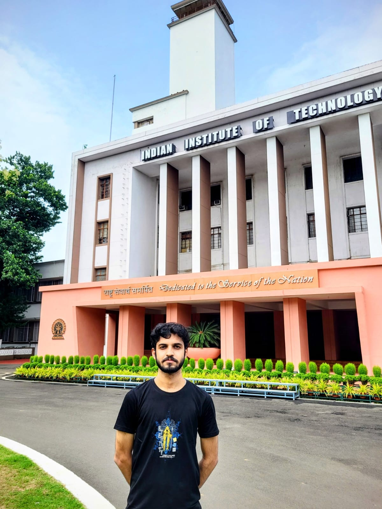

Understanding the role of Second Language Proficiency and Personality Traits of Bilinguals on their Working Memory Capacity and Emotional Intelligence
Journal of the Indian Academy of Applied Psychology, 52(1), 11-21
📍 IIT Kharagpur, West Bengal, India
I work at the intersection of Extended Reality (XR), Translational Neuroscience, Cognitive Science and Multimodal Neuroimaging. I am passionate about building immersive technologies that don't just push the boundaries of science but genuinely heal people.

I am a PhD Researcher at the Centre for Interdisciplinary and Convergent Technologies (CIDCT) (formerly known as Advanced Technology Development Centre), IIT Kharagpur, under the guidance of Prof. Kaushal Kumar Bhagat at the iVAR Lab (Joint Supervisor: Dr. Mrinal Kumar Acharya). I work in clinical collaboration with the BC Roy Multi-Specialty Medical Research Centre (MRC), bridging the gap between cutting-edge immersive technology and real-world patient care.
My academic journey began with a BSc and MSc in Psychology from Banaras Hindu University (BHU), where I developed a deep foundation in human cognition, behaviour, and neuroscience. That background now directly informs how I design and evaluate XR-based rehabilitation systems.
IIT Kharagpur, West Bengal, India | Current
Centre for Interdisciplinary and Convergent Technologies (CIDCT) & BC Roy Multi-Specialty Medical Research Centre (MRC).
Supervisors: Prof. Kaushal Kumar Bhagat (iVAR Lab) & Dr. Mrinal Kumar Acharya.
Cognitive Science Lab, Banaras Hindu University | Supervisor: Dr. Trayambak Tiwari
Banaras Hindu University, India | 2023 - 2025
CGPA: 8.18/10
Thesis: The influence of second language proficiency and personality traits of bilinguals on their working memory capacity and emotional intelligence.
Banaras Hindu University, India | 2020 - 2023
Minors in Chemistry and Zoology.
CGPA: 8.27/10
Journal of the Indian Academy of Applied Psychology, 52(1), 11-21
National Conference: Behavioural and Organizational Perspectives of Cybersecurity for Viksit Bharat@2047 by ICSSR
International Conference: Indo-French Workshop on AI & Healthcare
Organized by AIIMS Delhi, IIT Delhi, Paris Brain Institute, Sorbonne Universitat, Ministry of Science and Technology, India.
ICSSR National Conference on Cybersecurity
Psychology